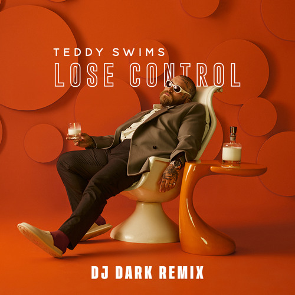
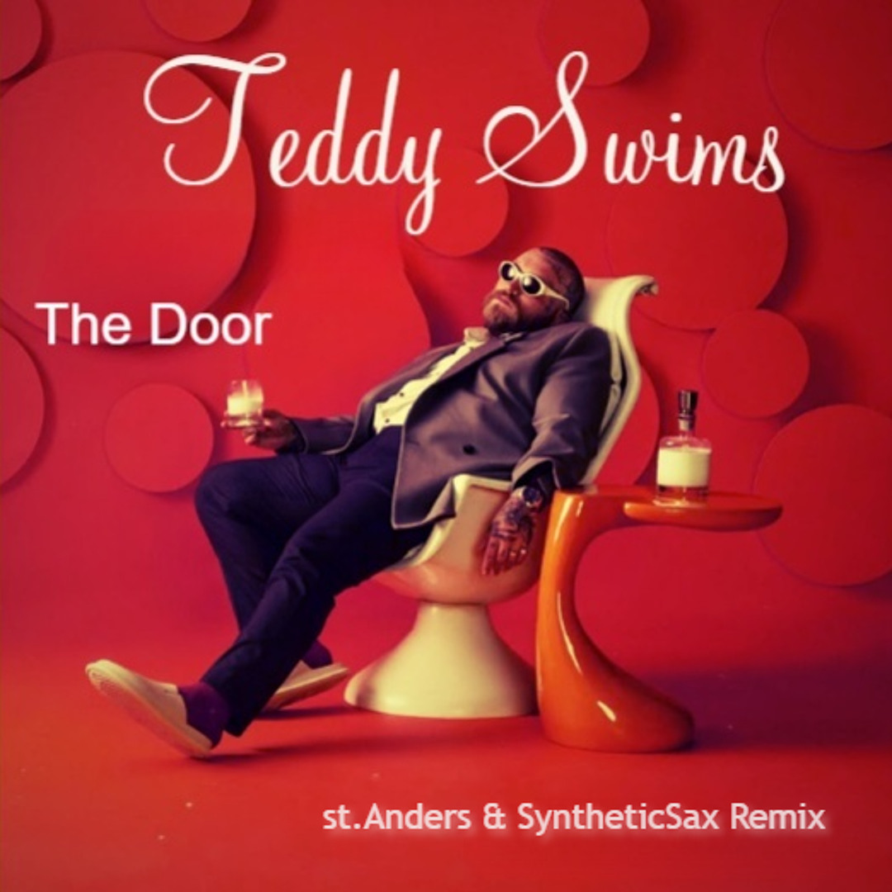
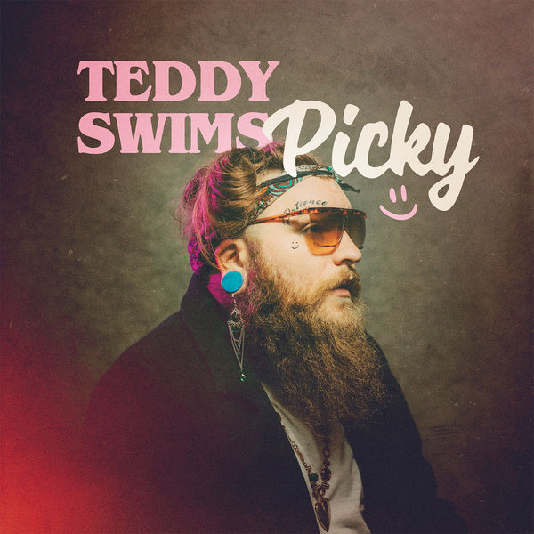
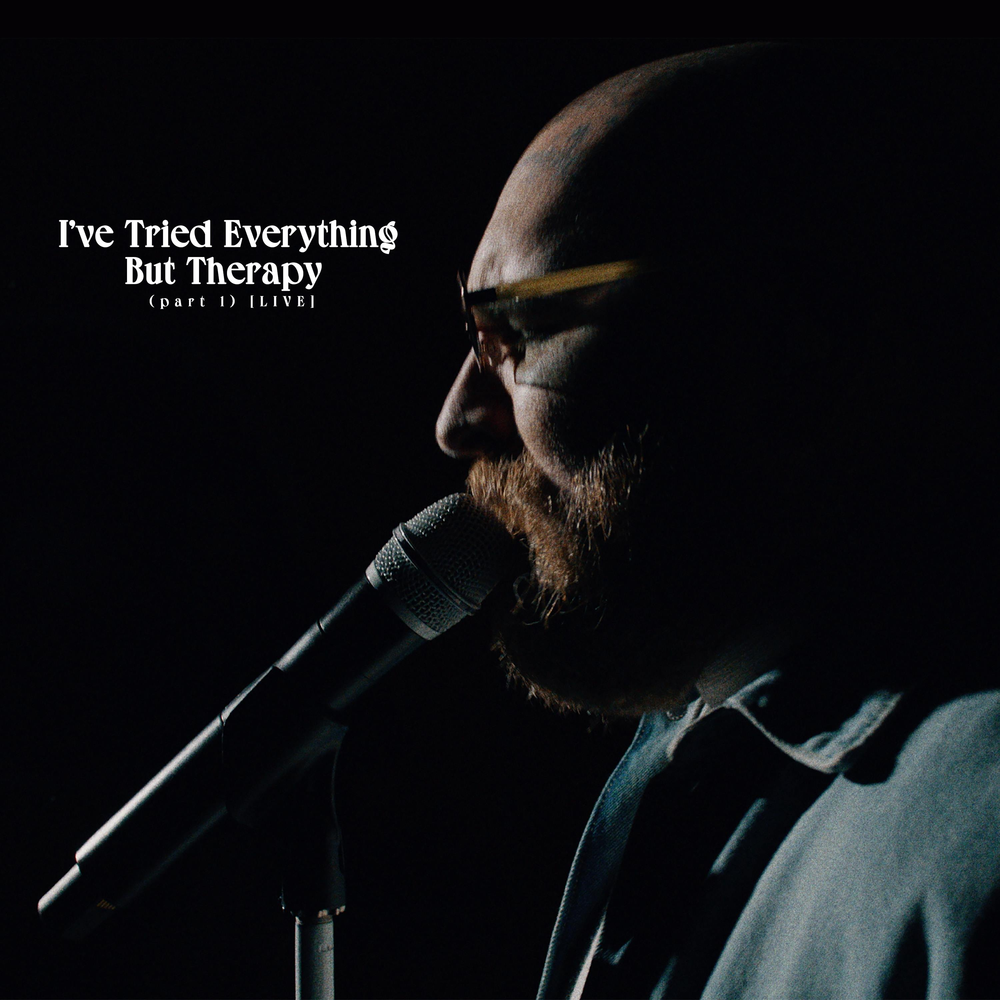

MEJORES CANCIONES
Lose Control
You are still the one

The door
Lista de Álbumes, descripción y lista de canciones |
||
| Album | Description | Songs |
| Picky | 2015 |
|
|  | "Picky" reached number one in Mexico, on the Mexico Airplay chart issue dated May 14, 2016. The song displaced Spanish Latin pop singer Enrique Iglesias's "Duele el Corazón" from the top of the chart. "Picky" also peaked at number two in Spain, at number 11 in his native Panama, and at number 15 on the US Hot Latin Songs, becoming Montana's breakthrough song. |
|
| I've Tried Everything But Therapy | 2025 |
|
|  | I've Tried Everything But Therapy (Part 1), Swims' full-length debut, embarks on that deeper self-exploration through visceral storytelling. The title comes from his observation that younger generations are breaking decades of stigma by being open about their mental health. |
|
| Bed On Fire | 2023 |
|
Bed on Fire fue lanzado en enero de 2022. "Love for a Minute" en Late Night with Seth Meyers en enero y "911" en The Ellen DeGeneres Show en febrero. Apoyó el EP con una gira principal de tres meses por Europa y América del Norte a partir de febrero, seguida de una segunda gira por Europa en mayo y junio. |
||